55 tons · Inner Sphere · 6 variants · 3053 to 3125

The Bushwacker should not exist. It was a failure, and everyone involved knew it was a failure.
The idea was sound enough. Build a medium with a low-slung, narrow upper torso so there is less of it to shoot at from the front. Evaluators liked it. The problem was what that shape did to the inside: everything ended up crammed together, and the fusion engine finished up close enough to the sensors and the communications gear to interfere with both. Systems failed. Engineers could not fix it, and not for want of trying. The thing was headed for the scrap heap.
Then the Armed Forces of the Federated Commonwealth raided a Clan Jade Falcon base on Twycross and came back with a stack of schematics, including the Mad Dog, which the Inner Sphere calls the Vulture. Different machine, more vertical, and the exact same compressed volume problem, which Clan engineers had solved by making some genuinely odd decisions about internal layout.
TharHes copied their homework. They reconfigured the internal structure using the Clan solution, and the Bushwacker went into full production on Tharkad in 3053, right after the Truce of Tukayyid.
So the machine was rescued by technical data stolen from the enemy it had been designed to fight. There is no neater summary of the Clan Invasion's effect on Inner Sphere engineering than that.
What you have got. Fifty-five tons, walk five, run eight, no jump. An AC/10, an ER large laser, two LRM 5s and a pair of machine guns on the original. A weapon for every range and nothing spectacular at any of them, which is exactly what a medium should be. If you are choosing one: the BSW-X1 and BSW-S2 are the workhorses, the BSW-L1 is the one that survives, and the BSW-X4 is the best of the late ones.
The whole design is one idea: be harder to hit. The upper torso sits low and narrow so there is less of you presented to anything shooting from the front, and at walk five and run eight you are not standing still either.
That is a real advantage and it cost more than anybody expected. Squeeze the volume and everything inside has to live closer together, and on the early machines that meant the fusion engine sat near enough to the sensor and comms gear to interfere with them. Not a tuning problem. A layout problem, and you cannot tune your way out of where things physically are.
The weapon fit is deliberately unremarkable. An AC/10 for the middle distance, an ER large laser for reach, two LRM 5s to do something useful on the approach, and two machine guns for infantry. Nothing there is going to win a fight on its own. Together they mean there is no range at which a Bushwacker has nothing to do, and on fifty-five tons that is worth more than a big gun.
The thing to check before you sign one out is the engine. Most of them run a 275 XL. The BSW-L1 is the exception and uses a light engine instead, which takes up less room in the side torsos and means losing one is survivable rather than terminal. On a machine whose entire defence is being difficult to hit, having a second line of defence matters.
Worth spelling this out because it is the only example of it on this site.
The Bushwacker's fatal flaw was a consequence of its shape. The Clan Mad Dog, known in the Inner Sphere as the Vulture, a completely different machine built by a completely different culture, had arrived at the same problem from the opposite direction: a compressed internal volume causing interference. Clan engineers had already solved it with an unusual internal layout.
The FedCom raid on Twycross brought those schematics home, TharHes adapted the solution, and a dead Inner Sphere design walked. Every other chassis on this site was improved by recovering its own lost technology. This one was saved by copying the enemy.
Production started on Tharkad in 3053, right after the Truce of Tukayyid, though units serving on the Clan front had already been issued preproduction machines during the invasion itself. That is why it turned up first along the Clan and Lyran Alliance border, and it is also why the early ones have a reputation among people who were there.
By the end of the FedCom Civil War you could find a Bushwacker in almost every first-line unit in both halves of the Federated Commonwealth. And then, for reasons nobody has satisfactorily explained, it became a particular favourite of MechWarriors in the Draconis and Capellan Marches. Sarna records that as an unknown. I like that it is an unknown. Machines acquire reputations in units for reasons that never make it into a production record.
The ending is the part I find bleak. TharHes Industries was badly damaged during the Jihad and the Word of Blake occupation of Tharkad, and to raise the capital to rebuild its lines the company sold the Bushwacker plans outright. Coventry Metal Works bought them and used the specifications to build the Gauntlet OmniMech. Modern Bushwackers now share a frame and a range of components with it, which lets both firms keep costs down.
So the design that was saved by copying the Clans ended up being sold off to pay for a factory, and the machine that came out of it is a cousin the original never asked for.
Every verdict below is against other Bushwackers. With only six variants across a single century the era filtering matters less here than on the older chassis, and the engine choice matters more.
Nothing in its era does the chassis's job better for the money.
Does the job competently. Another variant does it better or cheaper, but there is no reason to avoid this one.
Only earns its Battle Value if you specifically need what it carries. C3, stealth, a command console, flak, jump jets.
Another variant in the same era, at no more than 3 percent above its Battle Value, matches or beats it on every Alpha Strike damage band, on armour, on structure, and carries every special ability it has. Nothing gained, something lost, no dearer.
Only the Trap tier is calculated. It is worked out from the variant data rather than decided by me, which means it is falsifiable: to argue with it you only have to name something the cheaper machine gives up. The other three are my opinion and you should treat them that way. 0 of the 6 Bushwacker variants fail the Trap test. The full rating scale is here, including what it deliberately does not measure.
55 tons · BV 1223 · PV 33 · Skirmisher · 3053
Walk 5 / Run 8 / Jump 0 · 11 IS Double · 275 XL Engine
2x LRM 5, 1x AC/10, 2x Machine Gun, 1x ER Large Laser
The one that finally worked, 3053. An AC/10, an ER large laser, two LRM 5s and a pair of machine guns, on a frame that walks five and runs eight. Nothing clever, a weapon for every range, and at BV 1223 it is one of the better general purpose mediums anybody built.
55 tons · BV 1293 · PV 33 · Sniper · 3056
Walk 5 / Run 8 / Jump 0 · 11 IS Double · 275 XL Engine
2x SRM 4, 1x LB 10-X AC, 1x Anti-Missile System, 1x ER Large Laser
Swaps the AC/10 for an LB 10-X, the missiles for SRM 4s, and adds an anti-missile system. On a machine this fragile, the AMS earns its tonnage. The cluster ammunition makes it genuinely nasty against anything already opened up.
55 tons · BV 1513 · PV 33 · Skirmisher · 3063
Walk 5 / Run 8 / Jump 0 · 10 IS Double · 275 Light Engine
1x LB 20-X AC, 1x ER Large Laser
An LB 20-X and an ER large laser, nothing else, and a light engine instead of the XL. Fewer guns, more armour, and losing a side torso no longer ends the fight. Structure is the same on the card but the crit space is not, and in practice this is the one that survives.
55 tons · BV 1751 · PV 37 · Sniper · 3125
Walk 5 / Run 8 / Jump 0 · 11 IS Double · 275 XL Engine
2x MML 5, 1x Plasma Rifle, 2x Medium Laser, 1x ER Large Laser
3125, and the most complete version. Two MML 5s so you choose your missile type on the day, a plasma rifle, an ER large and two mediums. It does something useful at every range on the board, which is what the design was always trying to be.
Piloting one. Move. The low profile helps, the speed helps more, and a Bushwacker that stands still is a fifty-five ton machine with mediocre armour and no special protection. Use the spread of weapons: there is no range where you have nothing to contribute, so contribute. Against the XL fits, keep your side torsos out of a concentrated arc.
Fighting one. It has an answer at every range, so beating it on range brackets is hard. What it does not have is armour. Concentrate fire, take a side torso off any of the XL variants and it is done. The BSW-L1 is the one that will not fold to that, and it is also the one with the fewest guns.
What I see go wrong. People treat it as a brawler because it carries an autocannon. It is not built for a stand-up fight and it does not have the plate for one. It is a machine that should be somewhere inconvenient, shooting, and then somewhere else.
If you run solo games with our AI opponent, the Bushwacker is straightforward: 4 of the 6 variants are Skirmishers and 2 are Snipers.
Useful as an opposing medium precisely because it does not commit hard. It is a nuisance that keeps shooting, which is a harder problem to solve than something that charges you.
Damage figures are the Alpha Strike short, medium and long values. BV is Battle Value 2.0.
| Variant | Intro | BV | PV | Role | Weapons | S/M/L | Verdict |
|---|---|---|---|---|---|---|---|
| Clan Invasion | |||||||
| BSW-X1 | 3053 | 1223 | 33 | Skirmisher | 2x LRM 5, 1x AC/10, 2x Machine Gun, 1x ER Large Laser | 3/3/2 | Worth it |
| BSW-X2 | 3054 | 1193 | 33 | Skirmisher | 3x LRM 5, 1x AC/10, 2x Machine Gun, 2x Medium Pulse Laser | 4/3/1 | Solid |
| BSW-S2 | 3056 | 1293 | 33 | Sniper | 2x SRM 4, 1x LB 10-X AC, 1x Anti-Missile System, 1x ER Large Laser | 3/3/2 | Worth it |
| Civil War | |||||||
| BSW-L1 | 3063 | 1513 | 33 | Skirmisher | 1x LB 20-X AC, 1x ER Large Laser | 3/3/1 | Worth it |
| Jihad | |||||||
| BSW-S2r | 3075 | 1339 | 32 | Skirmisher | 1x SRM 4, 1x LB 10-X AC, 1x Anti-Missile System, 1x Plasma Rifle | 3/3/1 | Situational |
| Late Republic | |||||||
| BSW-X4 | 3125 | 1751 | 37 | Sniper | 2x MML 5, 1x Plasma Rifle, 2x Medium Laser, 1x ER Large Laser | 3/3/2 | Worth it |
Availability for the BSW-X1 by era, straight off the Master Unit List.
| Era | Available to |
|---|---|
| Clan Invasion (3050 - 3061) | Federated Commonwealth, Federated Suns, Kell Hounds, Lyran Alliance, Lyran Commonwealth, Mercenary, St. Ives Compact, Wolf's Dragoons |
| Civil War (3062 - 3067) | Federated Commonwealth, Federated Suns, Kell Hounds, Lyran Alliance, Mercenary, St. Ives Compact, Wolf's Dragoons |
| Jihad (3068 - 3080) | Federated Suns, Kell Hounds, Lyran Alliance, Mercenary, Wolf's Dragoons |
| Early Republic (3081 - 3100) | Mercenary |
| Late Republic (3101 - 3130) | Mercenary |
| Dark Age (3131 - 3150) | Mercenary |
| ilClan (3151 - 9999) | Mercenary |
60 tons · Clan · 15 variants · BV 1892 to 2676
Known to the Clans as the Mad Dog. Its captured schematics solved the Bushwacker’s interference problem. No shared parts, just a borrowed idea about where to put things.
65 tons · Inner Sphere · 8 variants · BV 1222 to 2575
The other design out of the same realm and roughly the same moment, and the other one whose story is about politics rather than engineering.
50 tons · Mixed · 24 variants · BV 968 to 1893
The other medium built around an autocannon, and the opposite philosophy: no subtlety, one enormous gun, and a profile you can see from orbit.
The BSW-X1 at BV 1223 and the BSW-S2 are the reliable general purpose picks. The BSW-L1 is the one built on a light engine rather than an XL, so it survives a side torso hit, and the BSW-X4 is the most complete of the late versions.
Its low, narrow upper torso left too little internal volume, so the fusion engine ended up close enough to the sensor and communication systems to cause electronic interference and system failures. Engineers could not design the problem out and the project was very nearly abandoned.
With Clan technology. A Federated Commonwealth raid on a Clan Jade Falcon base on Twycross recovered schematics for several Clan designs including the Mad Dog, the Vulture in Inner Sphere parlance, which had the same compressed volume problem and an unusual internal layout that solved it. TharHes adapted that approach and the design went into production in 3053.
Yes, as a general purpose medium. It carries something useful at every range, walks five and runs eight, and does not cost much. What it does not have is armour, so it works as a mobile nuisance rather than a brawler.
An OmniMech built by Coventry Metal Works from the Bushwacker specifications. TharHes was badly damaged during the Jihad and sold the plans to raise capital to rebuild, and modern Bushwackers now share a frame and various components with the Gauntlet so both firms can keep costs down.
Stats on this page are generated directly from our variant database, which is reconciled against the Master Unit List for Battle Value, introduction dates and per-era faction availability. Alpha Strike damage values are the standard card figures. If you spot something wrong, tell me and I will fix it.